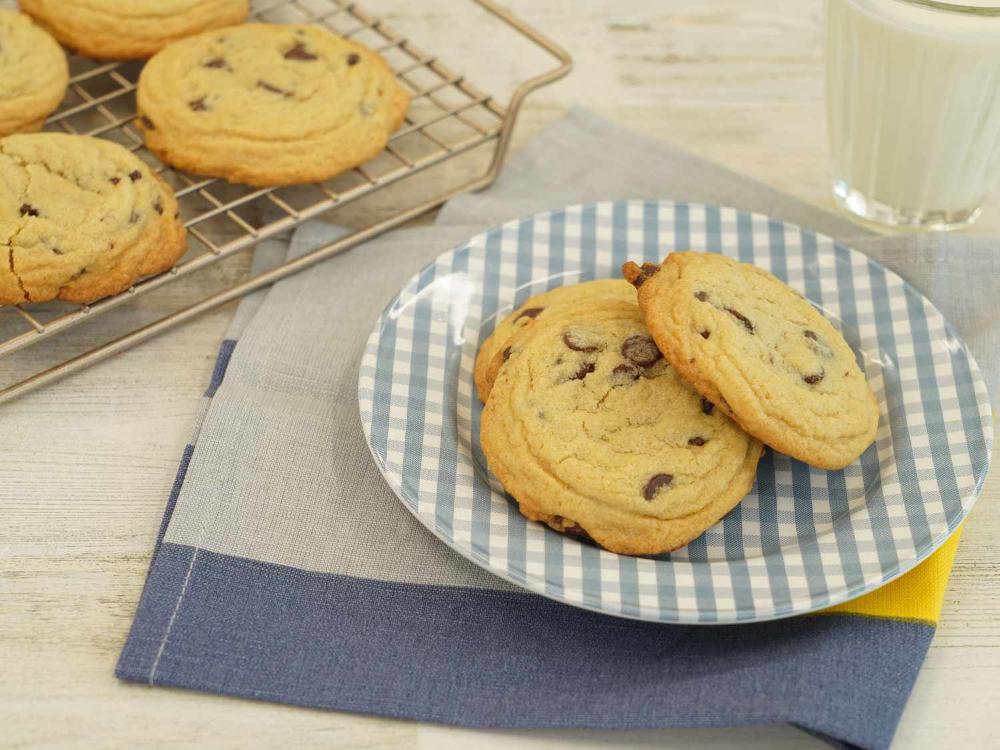

Best Chocolate Chip Cookies

A delicious treat for any gathering!
These chocolate chip cookies will blow your mind! Soft, chewy, and absolutely irresistible,
you'll be coming back for more than one! The key to making these cookies so delicious is the
water that helps puff the cookie up during baking and the vanilla which enhances the flavor
of the chocolate chip. Whether you're making these for your family, for a gathering of friends,
or just for yourself, they are sure to be a hit!
Ingredients
- 1 cup butter, softend
- 1 cup white sugar
- 1 cup packed hrown sugar
- 2 large eggs
- 2 teaspoons vanilla extract
- 1 teaspoon baking soda
- 2 teaspoons hot water
- 1/2 teaspoon salt
- 3 cups all-purpose flour
- 2 cups semisweet chocolate chips
- 1 cup chopped walnuts
Directions
- Gather ingredients, making sure butter is softened and eggs are at room temperature.
- Preheat oven to 350 Degrees Fahrenheit. Beat Butter, White sugar, and Brown sugar into a bowl until smooth
- Beat in eggs, one at a time, then stir in vanilla
- Dissolve baking soda in hot water. Add to batter along with Salt.
- Stir in flour, chocolate chips, and walnuts
- Drop spoonfuls of dough 2 inches apart onto ungreased baking sheets.
- Bake in preheated oven until edges are nicely hrowned, about 10 minutes.
- Cool on the baking sheets hriefly before removing to a wire rack to cool completely.
- Store in an airtight container or serve immediately and enjoy!